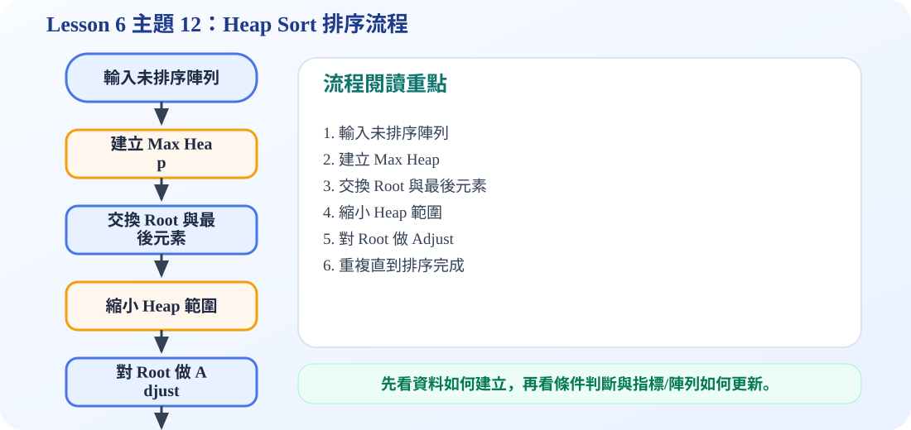

Heap Sort 動畫概念
使用 Max Heap 做由小到大排序時，每一回合會把目前最大的值放到陣列右邊，所以右邊會逐步形成已排序區。
一、Heap Sort 的第一步：建立 Max Heap
Heap Sort 不會一開始就直接比較所有元素，而是先把陣列視為 complete binary tree，然後從最後一個非葉節點開始做 heapify。完成後，最大值一定會在 index 1，也就是 root。
二、為什麼要把 root 和最後一個元素交換？
因為 root 是目前 heap 裡的最大值。把 root 和最後一個元素交換後，最大值就會被固定在陣列最後面。接著 heap size 減一，最後的排序區不再參與 heapify。
三、Heap Sort 的完整流程
重複「交換 root 與最後一個未排序元素」以及「重新調整 root」兩個動作，直到 heap size 只剩 1。最後陣列就會由小到大排列。
四、時間與空間複雜度
建立 heap 可視為 O(n)，每次刪除最大值後重新 heapify 是 O(log n)，共做 n 次，因此整體時間複雜度是 O(n log n)。Heap Sort 可以在原陣列中完成，所以額外空間通常是 O(1)。
C 程式碼：Heap Sort
/*
中文註解版程式：heap_sort_demo.c
說明：主題 12：Heap Sort。先建立 Max Heap，再反覆把最大值移到陣列尾端完成排序。
閱讀方式：先看資料結構定義，再看操作函式，最後看 main() 如何測試。
*/
// 匯入標準輸入輸出函式庫，提供 printf / scanf 等功能。
#include <stdio.h>
// 交換兩個整數的值，用於排序或 Heap 調整。
void swap(int *a, int *b) {
int temp = *a;
*a = *b;
*b = temp;
}
// 印出陣列內容；Heap 範例保留 a[0] 不使用，從 index 1 開始。
void printArray(int a[], int n) {
for (int i = 1; i <= n; i++) {
printf("%d ", a[i]);
}
printf("\n");
}
// Adjust 是 Heapify 的核心：把 root 節點向下移到正確位置。
void adjust(int a[], int root, int n) {
int e = a[root];
int child;
for (child = 2 * root; child <= n; child *= 2) {
if (child < n && a[child] < a[child + 1]) {
child++;
}
if (e >= a[child]) {
break;
}
a[child / 2] = a[child];
}
a[child / 2] = e;
}
// Heap Sort 主流程：先建 Max Heap，再反覆取出最大值。
void heapSort(int a[], int n) {
for (int i = n / 2; i >= 1; i--) {
adjust(a, i, n);
}
printf("After building max heap:\n");
printArray(a, n);
for (int i = n - 1; i >= 1; i--) {
swap(&a[1], &a[i + 1]); // 把目前最大值換到未排序區最後
adjust(a, 1, i); // 縮小 heap 範圍後重新調整 root
}
}
// 主程式：建立測試資料，呼叫上方函式，觀察輸出結果。
int main() {
int a[] = {0, 4, 1, 3, 2, 16, 9, 10, 14, 8, 7};
int n = 10;
printf("Original array:\n");
printArray(a, n);
heapSort(a, n);
printf("Sorted array:\n");
printArray(a, n);
return 0;
}
可編輯 C 程式範例：含中文註解與線上編輯器
這一段提供可直接修改的 C 程式碼。可以按「複製程式」貼到線上編輯器執行，也可以下載 .c 檔案。
程式題目教學內容：Tree Representation：Left-Child Right-Sibling
一、程式題目講解
本題說明一般樹如何用 left child 與 right sibling 兩個指標表示。學生需要理解：第一個孩子用 leftChild 連接，其餘兄弟節點用 rightSibling 串接。
二、完整程式碼
完整可執行程式碼已保留在上方「可編輯 C 程式範例：含中文註解與線上編輯器」區塊中，檔名為 heap_sort_demo.c。該程式碼已加入中文註解，學生可以直接複製到 OnlineGDB、Programiz 或 OneCompiler 執行。
三、程式執行結果
A 的 left child 是 B
B 的 right sibling 是 C輸出顯示 A 的 left child 是 B，B 的 right sibling 是 C，代表 A 的第一個孩子為 B，而 C 是 B 的同層兄弟，因此 A 實際上有 B、C 兩個孩子。
四、程式流程圖與流程圖說明
本頁下方已保留原本的程式流程圖。閱讀流程圖時，可以依序掌握「初始化資料或節點 → 執行主要函式或判斷 → 輸出結果」的過程。先建立 A、B、C 節點，再設定 A->leftChild = B，接著設定 B->rightSibling = C，最後印出這兩個連結關係。
五、重要函數與語法說明
createNode()：建立並初始化節點；malloc()：配置節點記憶體；->：透過指標存取結構成員；printf()：輸出節點關係。
六、整體說明
本題讓學生理解一般樹轉成二元形式的基礎：向下看第一個孩子，向右看下一個兄弟。
程式流程圖：Heap Sort 排序流程
下圖是本主題對應的程式執行流程，適合搭配本頁 C 程式碼一起看。

流程講解
- Heap sort 先把陣列整理成 max heap。
- 每一輪把 root 最大值交換到目前 heap 的最後。
- 縮小 heap 範圍後，對新的 root 做 adjust。
- 重複後，陣列就會由小到大排列完成。
這張流程圖把本頁程式的執行順序整理成一條清楚路徑。閱讀時先看輸入與資料如何建立，再看條件判斷、指標或陣列索引如何改變，最後用輸出結果確認程式邏輯是否正確。